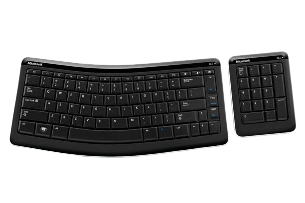

producenci klawiatur
Producentów klawiatur jest wiele, a każdy z nich oferuje unikalne modele, dopasowane do różnych potrzeb użytkowników. Klawiatury to nie tylko narzędzie do wprowadzania danych, ale również ważny element ergonomicznej pracy z komputerem. Wybierając klawiaturę, należy zwrócić uwagę nie tylko na jakość wykonania, ale również na jej konstrukcję, ergonomię i funkcjonalność. W naszym artykule przedstawimy kilku producentów klawiatur, którzy są znani z wysokiej jakości i innowacyjnych rozwiązań.
|
Logitech Firma ta oferuje szeroką gamę klawiatur o różnych rozmiarach i funkcjonalnościach. Ich produkty wyróżniają się jakością wykonania oraz innowacyjnymi rozwiązaniami, takimi jak podświetlenie czy klawisze multimedialne. 
|
|
Corsair To producent klawiatur skierowanych do graczy, które wyróżniają się wysoką wydajnością i funkcjonalnością. Klawiatury Corsair oferują wiele dodatkowych przycisków oraz funkcji, które umożliwiają dostosowanie klawiatury do indywidualnych potrzeb użytkownika. |
|
Razer Firma ta oferuje klawiatury skierowane głównie do graczy, które charakteryzują się wysoką wydajnością oraz innowacyjnymi rozwiązaniami, takimi jak mechaniczne klawisze czy programowalne przyciski. Klawiatury Razer są często wykorzystywane przez zawodowych graczy. |
|
Microsoft Firma ta oferuje szeroki wybór klawiatur przeznaczonych dla użytkowników domowych i biznesowych. Ich produkty wyróżniają się jakością wykonania oraz funkcjonalnością, taką jak np. obsługa gestów dotykowych.  |
|
HP Firma ta oferuje klawiatury skierowane do użytkowników biznesowych, które wyróżniają się jakością wykonania oraz funkcjonalnością, taką jak np. wbudowany czytnik linii papilarnych. |
|
Genesis Genesis to polski producent klawiatur, którego oferta skierowana jest przede wszystkim do graczy. Firma oferuje klawiatury mechaniczne oraz membranowe, często wyposażone w podświetlenie RGB. Klawiatury Genesis wyróżniają się oryginalnymi wzorami oraz bogatą funkcjonalnością, taką jak np. programowalne klawisze, tryb gry, czy funkcję blokady klawiszy Windows. Genesis zdobył sobie uznanie graczy dzięki stosunkowo niskiej cenie w porównaniu do innych producentów klawiatur gamingowych, przy zachowaniu wysokiej jakości wykonania. Na zdjęciu widoczny jest model klawiatury Genesis Rhod 400 rgb, jest to klawiatura którą aktualnie posiadam oraz na niej piszę te stronę. |
Oczywiście, poniżej przedstawiam końcówkę listy: Wymienione powyżej firmy to tylko kilka z wielu producentów klawiatur dostępnych na rynku. Inne popularne marki to m.in. Corsair, Razer, Logitech, Roccat, SteelSeries czy Cooler Master. Każda z tych firm oferuje swoje unikalne rozwiązania i funkcjonalności, a wybór odpowiedniej klawiatury zależy od indywidualnych potrzeb użytkownika. Bez względu jednak na preferencje, klawiatura jest niezwykle ważnym elementem wyposażenia każdego komputera, wpływającym na komfort i wydajność pracy oraz rozgrywki.